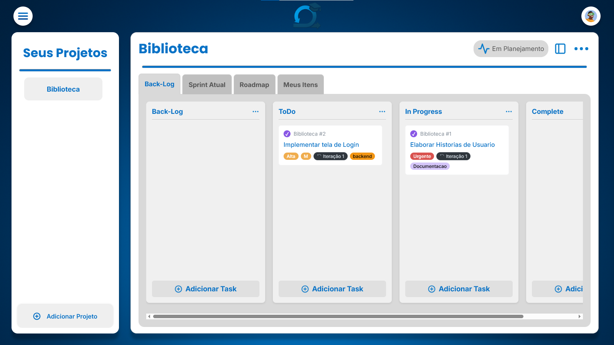
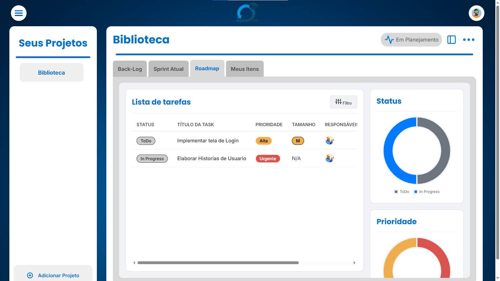
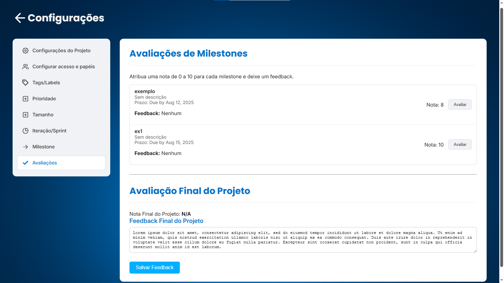
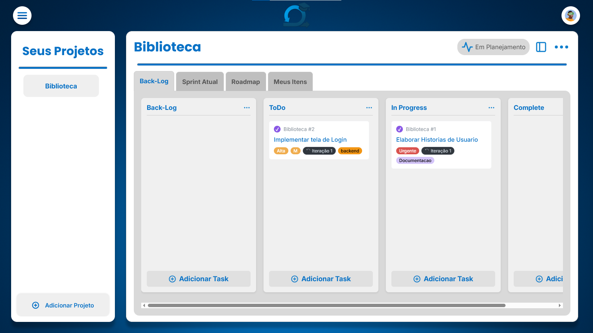
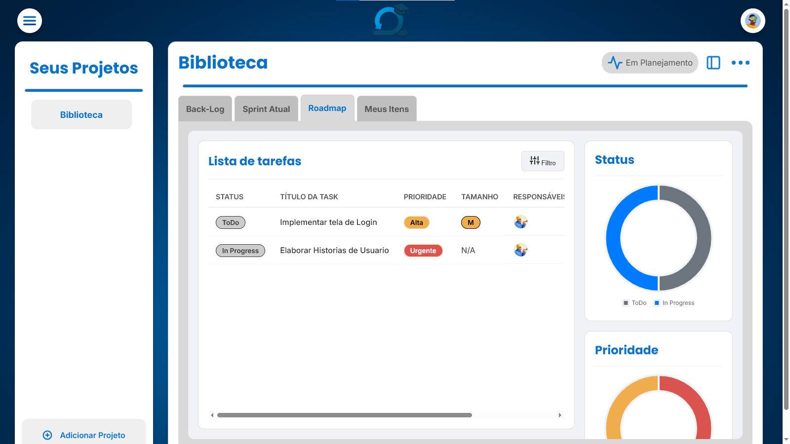
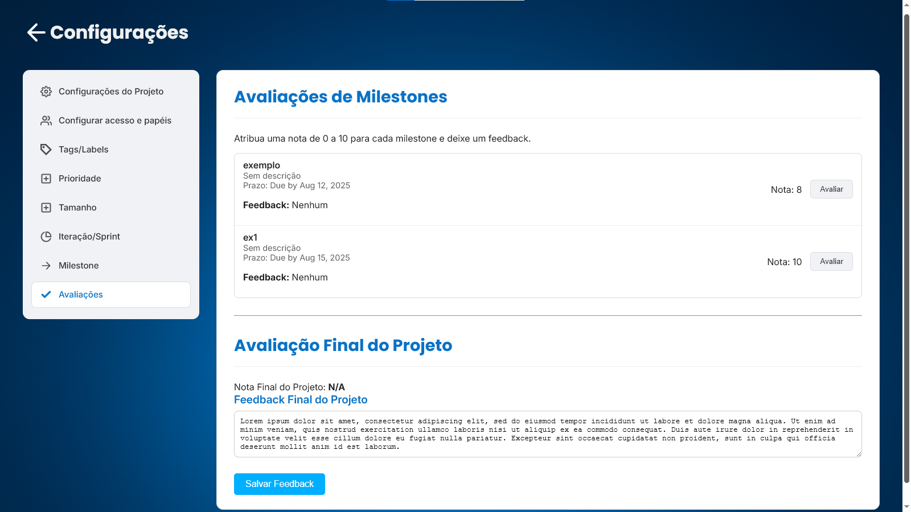

Sobre Mim
Desenvolvedor júnior em formação, estudante de Sistemas de Informação na UFRRJ (6° período). Minha trajetória começou no ensino técnico em Informática, onde descobri minha afinidade pela programação/desenvolvimento de software.
Carrego comigo curiosidade e proatividade que se manifestam tanto na vida pessoal quanto profissional. A responsabilidade natural de ser o filho mais velho me ensinou organização e comprometimento, qualidades que aplico em todos os projetos que me envolvo. Minha paixão por descobrir novos álbuns e filmes espelha minha abordagem na tecnologia: sempre explorando, aprendendo e buscando novas perspectivas para crescer na área
Minhas Habilidades
Frontend
HTML5, CSS3, JavaScript
Backend
Python, Django, Java, Spring Boot, Hibernate
Banco de Dados
MySQL, SQLite
Ferramentas
Git, GitHub Projects, Insommnia
Projetos em Destaque

 





LearnLoop (Grupo)
Descrição: Trabalho da displina de Projeto de Software. Consiste em um software de gerenciamento de projetos om base em metodologia ágil SCRUM voltado para o ambiente estudantil.
Atuação: Formulação de HUs (Histórias de Usuário), desenvolvimento do backend com modelagem de classes (Usuario, Projeto, StatusProjeto, TipoProjeto), implementação de funcionalidades do sistema e desenvolvimento de testes unitários com suíte completa para views (31 casos de teste).
- Linguagens: Python, JavaScript
- Frameworks: Django
- Banco de Dados: SQLite
- Testes: Pytest
- Ferramentas: Figma, GitHub Projects, Google Docs


Agregador de Investimentos
Descrrição: Desenvolvimento de uma API REST para agregação e gerenciamento de carteiras de investimentos. Consiste em um sistema backend que permite o cadastro de usuários, contas de investimento e ações (stocks), além do controle de quantidades por conta. Implementação de arquitetura em camadas (controller, service, repository, entity) com relacionamentos entre entidades, cliente HTTP para consumo de APIs externas (BrapiClient), e cobertura completa de testes unitários com JUnit e Mockito.
- Linguagens: Java
- Frameworks: Spring, Hibernate
- Banco de Dados: MySQL
- Testes: JUnit, Mockito
- Ferramentas: Docker, Insomnia, Maven, Git, GitHub